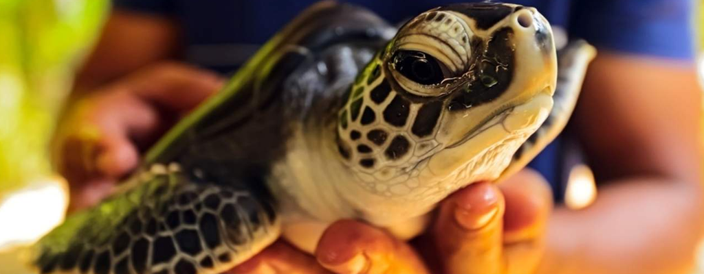
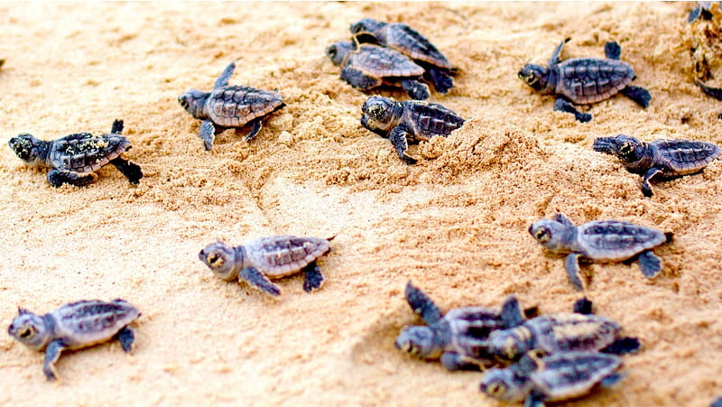

Kosgoda Hactherys
This hatchery started 1978 as the first Turtle Hatchery in Sri Lanka founded by Dr. Upen de Silva & Dr. R. S. B Wickremsinghe Our lifetime dedication is to make it easy to go green and protect and conserve Sri Lanka’s wildlife and its habitats particularly endangered species. Main goal is to save nature for future by leading facilitating and encouraging the human beings to save, conserve and enhance the environment including national habitats flora and fauna. Motivate people to take actions for conservation in every way for preservation of flora fauna biodiversity and natural environment.
Project Background and Achievements
The main aim of the project is to monitor local sea turtle activity and conserve the local nesting sites. We aim to make the public more aware of how endangered these beautiful creatures are and just how important it is to help protect them before it is too late.One of the most important activities of the project is its hatchery. Within the sanctuary of the project, collected and rescued eggs can hatch safely away from predators before being released into the sea. In addition, a certain number from each hatching are kept back for a short period for 'headstarting' before release.